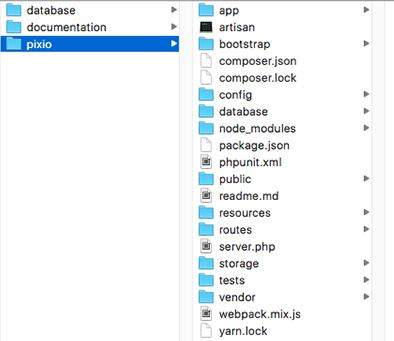

Pixio Documentation
Ultimate PHP Photo Sharing Script
Thank you for purchasing our premium item, Pixio ultimate PHP photo sharing script. We will walk you through the installation and setup of this project. Hold tight, it will be quick and easy.
Before starting the installation, there are some things that you must to prepare. You will need to make sure your server meets the following requirements:
If you have not set up your server, you can download XAMPP on following link. Please download the latest version and install on your computer.
The download file will contains 3 folders: pixio, database, and documentation.
The pixio folder includes all main project files (Frontend, API's, Assets, etc). As the name, 2 others folders contains database, and documentation to help you to install this project.
To perform the installation, extract the downloaded zip file then copy the "pixio" folder to the root directory of your web server. These directories are usually named htdocs, www, public_html or others. Then import the "pixio.sql" database file to your local server.
The next step is to configure the database on your project. Open the ".env" file in your project directory. Then adjust the following line with the configuration on your server.
DB_DATABASE=pixio // Your database name DB_USERNAME=root // Your mysql username DB_PASSWORD= // Your mysql user password
Cheers! Now you can access your project via browser. The following are the user account that have registered in the database that you can use to login.
This part will get you to set up Facebook oAuth to enable users to login or register through their facebook account. The first step is to get Facebook oAuth API Id and Secret Key. Visit this link to go to Facebook Developer page and create new App.
While creating a new App there will be a popup that asked you to fill display name and contact email. You can fill the display name with "Pixio" or something else.
Now go to Dashboard menu and scroll down the page until you find "Add a Product" section. Choose Facebook Login and click Set Up.
If you find this things appear just skip ahead and move to (Settings > Basic) menu.
There you will find App Id and App Secret that will be used in our Laravel config.
Now lets add it to .env file.
FACEBOOK_CLIENT_ID=app-id // Your App Id
FACEBOOK_CLIENT_SECRET=app-secret // Your App Secret
CALLBACK_URL_FACEBOOK=https://{your-app.domain}/auth/facebook/callback // Your App Callback Url
Now we are going to set up callback url that used after user succesfully logged in. Go to (Products > Facebook Login > Settings). Add this value to "Deauthorize Callback URL" field: https://{your-app.domain}/auth/facebook/callback.
Don't forget to use https and click save.
First, visit Twitter Application Management. You can create your App here.
Once you create new App you will be asked to fill out simple form. Fill out each field and set the callback url to this value: https://{your-app.domain}/auth/twitter/callback.
Click Create to create your app. Once you get your App created you will find API tokens and token secret. Copy these keys and add them to Laravel config like we did before.
TWITTER_CLIENT_ID=app-id // Your App Id
TWITTER_CLIENT_SECRET=app-secret // Your App Secret
CALLBACK_URL_TWITTER=https://{your-app.domain}/auth/twitter/callback // Your App Callback Url
You'll find all Pixio releases with a log of features added and bug fixes next to each one.
Version 1.0 (April 4th, 2019) - Initial Release